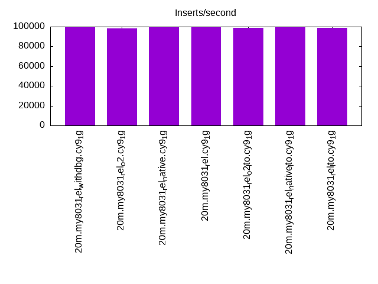
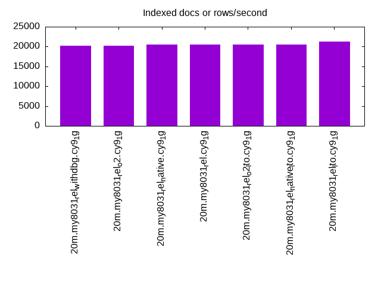
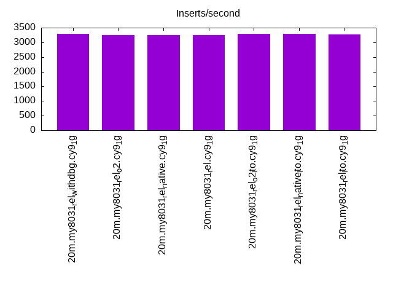
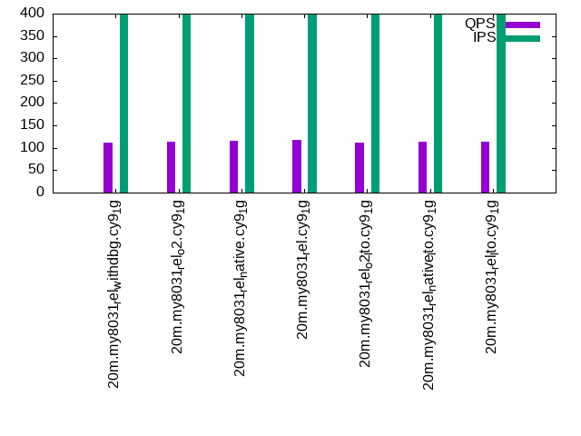
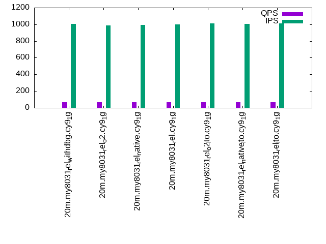
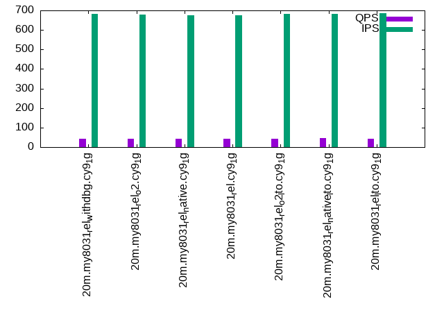

This is a report for the insert benchmark with 20M docs and 4 client(s). It is generated by scripts (bash, awk, sed) and Tufte might not be impressed. An overview of the insert benchmark is here and a short update is here. Below, by DBMS, I mean DBMS+version.config. An example is my8020.c10b40 where my means MySQL, 8020 is version 8.0.20 and c10b40 is the name for the configuration file.
The test server has 8 AMD cores, 16G RAM and an NVMe SSD. It is described here as the Beelink. The benchmark was run with 4 clients and there were 1 or 2 connections per client (1 for queries, 1 for inserts). The benchmark loads 20M rows without secondary indexes, creates secondary indexes, loads another 20M rows then does 3 read+write tests for one hour each that do queries as fast as possible with 100, 500 and then 1000 writes/second/client concurrent with the queries. There is 1 table. The database is cached by the OS page cache but not the storage engine. Clients and the DBMS share one server. The per-database configs are in the per-database subdirectories here.
The tested DBMS are:
The numbers are inserts/s for l.i0 and l.i1, indexed docs (or rows) /s for l.x and queries/s for q*.2. The values are the average rate over the entire test for inserts (IPS) and queries (QPS). The range of values for IPS and QPS is split into 3 parts: bottom 25%, middle 50%, top 25%. Values in the bottom 25% have a red background, values in the top 25% have a green background and values in the middle have no color. A gray background is used for values that can be ignored because the DBMS did not sustain the target insert rate. Red backgrounds are not used when the minimum value is within 80% of the max value.
| dbms | l.i0 | l.x | l.i1 | q100.1 | q500.1 | q1000.1 |
|---|---|---|---|---|---|---|
| 20m.my8031_rel_withdbg.cy9_1g | 99502 | 20262 | 3280 | 112 | 68 | 44 |
| 20m.my8031_rel_o2.cy9_1g | 98039 | 20242 | 3243 | 113 | 67 | 44 |
| 20m.my8031_rel_native.cy9_1g | 100000 | 20489 | 3255 | 115 | 68 | 44 |
| 20m.my8031_rel.cy9_1g | 100000 | 20489 | 3254 | 117 | 68 | 44 |
| 20m.my8031_rel_o2_lto.cy9_1g | 99010 | 20510 | 3288 | 111 | 69 | 44 |
| 20m.my8031_rel_native_lto.cy9_1g | 100000 | 20510 | 3291 | 113 | 70 | 45 |
| 20m.my8031_rel_lto.cy9_1g | 98522 | 21225 | 3279 | 113 | 69 | 44 |
This table has relative throughput, throughput for the DBMS relative to the DBMS in the first line, using the absolute throughput from the previous table.
| dbms | l.i0 | l.x | l.i1 | q100.1 | q500.1 | q1000.1 |
|---|---|---|---|---|---|---|
| 20m.my8031_rel_withdbg.cy9_1g | 1.00 | 1.00 | 1.00 | 1.00 | 1.00 | 1.00 |
| 20m.my8031_rel_o2.cy9_1g | 0.99 | 1.00 | 0.99 | 1.01 | 0.99 | 1.00 |
| 20m.my8031_rel_native.cy9_1g | 1.01 | 1.01 | 0.99 | 1.03 | 1.00 | 1.00 |
| 20m.my8031_rel.cy9_1g | 1.01 | 1.01 | 0.99 | 1.04 | 1.00 | 1.00 |
| 20m.my8031_rel_o2_lto.cy9_1g | 1.00 | 1.01 | 1.00 | 0.99 | 1.01 | 1.00 |
| 20m.my8031_rel_native_lto.cy9_1g | 1.01 | 1.01 | 1.00 | 1.01 | 1.03 | 1.02 |
| 20m.my8031_rel_lto.cy9_1g | 0.99 | 1.05 | 1.00 | 1.01 | 1.01 | 1.00 |
This lists the average rate of inserts/s for the tests that do inserts concurrent with queries. For such tests the query rate is listed in the table above. The read+write tests are setup so that the insert rate should match the target rate every second. Cells that are not at least 95% of the target have a red background to indicate a failure to satisfy the target.
| dbms | q100.1 | q500.1 | q1000.1 |
|---|---|---|---|
| my8031_rel_withdbg.cy9_1g | 398 | 1007 | 681 |
| my8031_rel_o2.cy9_1g | 398 | 985 | 678 |
| my8031_rel_native.cy9_1g | 398 | 995 | 675 |
| my8031_rel.cy9_1g | 399 | 998 | 675 |
| my8031_rel_o2_lto.cy9_1g | 399 | 1011 | 684 |
| my8031_rel_native_lto.cy9_1g | 398 | 1005 | 681 |
| my8031_rel_lto.cy9_1g | 399 | 1012 | 686 |
| target | 400 | 2000 | 4000 |
l.i0: load without secondary indexes. Graphs for performance per 1-second interval are here.
Average throughput:
Insert response time histogram: each cell has the percentage of responses that take <= the time in the header and max is the max response time in seconds. For the max column values in the top 25% of the range have a red background and in the bottom 25% of the range have a green background. The red background is not used when the min value is within 80% of the max value.
| dbms | 256us | 1ms | 4ms | 16ms | 64ms | 256ms | 1s | 4s | 16s | gt | max |
|---|---|---|---|---|---|---|---|---|---|---|---|
| my8031_rel_withdbg.cy9_1g | 91.645 | 6.229 | 2.016 | 0.110 | 0.164 | ||||||
| my8031_rel_o2.cy9_1g | 90.329 | 7.504 | 2.062 | 0.105 | 0.148 | ||||||
| my8031_rel_native.cy9_1g | 91.381 | 6.581 | 1.948 | 0.090 | 0.138 | ||||||
| my8031_rel.cy9_1g | 91.709 | 6.193 | 1.991 | 0.107 | 0.203 | ||||||
| my8031_rel_o2_lto.cy9_1g | 91.677 | 6.103 | 2.067 | 0.152 | 0.001 | 0.279 | |||||
| my8031_rel_native_lto.cy9_1g | 91.722 | 6.107 | 2.034 | 0.136 | 0.221 | ||||||
| my8031_rel_lto.cy9_1g | 90.701 | 7.107 | 2.106 | 0.086 | 0.156 |
Performance metrics for the DBMS listed above. Some are normalized by throughput, others are not. Legend for results is here.
ips qps rps rmbps wps wmbps rpq rkbpq wpi wkbpi csps cpups cspq cpupq dbgb1 dbgb2 rss maxop p50 p99 tag 99502 0 0 0.0 509.1 46.3 0.000 0.000 0.005 0.477 12679 49.0 0.127 39 2.4 11.0 1.4 0.164 27870 9689 20m.my8031_rel_withdbg.cy9_1g 98039 0 0 0.0 495.7 45.7 0.000 0.000 0.005 0.477 12559 50.0 0.128 41 2.4 11.0 1.4 0.148 25471 15382 20m.my8031_rel_o2.cy9_1g 100000 0 0 0.0 508.6 46.3 0.000 0.000 0.005 0.475 12731 49.8 0.127 40 2.4 11.0 1.4 0.138 27570 15483 20m.my8031_rel_native.cy9_1g 100000 0 0 0.0 509.9 46.3 0.000 0.000 0.005 0.474 12780 49.2 0.128 39 2.4 11.0 1.4 0.203 27281 13895 20m.my8031_rel.cy9_1g 99010 0 0 0.0 506.5 46.1 0.000 0.000 0.005 0.477 12619 48.8 0.127 39 2.4 11.0 1.4 0.279 26781 4095 20m.my8031_rel_o2_lto.cy9_1g 100000 0 0 0.0 512.6 46.4 0.000 0.000 0.005 0.475 12705 48.5 0.127 39 2.4 11.0 1.4 0.221 26371 999 20m.my8031_rel_native_lto.cy9_1g 98522 0 0 0.0 512.8 46.5 0.000 0.000 0.005 0.483 12658 49.5 0.128 40 2.4 11.0 1.4 0.156 26570 14392 20m.my8031_rel_lto.cy9_1g
l.x: create secondary indexes.
Average throughput:
Performance metrics for the DBMS listed above. Some are normalized by throughput, others are not. Legend for results is here.
ips qps rps rmbps wps wmbps rpq rkbpq wpi wkbpi csps cpups cspq cpupq dbgb1 dbgb2 rss maxop p50 p99 tag 20262 0 105 7.0 564.1 22.8 0.005 0.354 0.028 1.153 4434 7.6 0.219 30 4.0 12.6 1.5 0.063 NA NA 20m.my8031_rel_withdbg.cy9_1g 20242 0 105 7.0 561.5 22.9 0.005 0.354 0.028 1.160 4426 7.9 0.219 31 4.0 12.6 1.5 0.067 NA NA 20m.my8031_rel_o2.cy9_1g 20489 0 106 7.1 564.5 23.1 0.005 0.354 0.028 1.157 4457 7.8 0.218 30 4.0 12.6 1.5 0.043 NA NA 20m.my8031_rel_native.cy9_1g 20489 0 106 7.1 564.9 23.1 0.005 0.354 0.028 1.152 4452 7.8 0.217 30 4.0 12.6 1.5 0.017 NA NA 20m.my8031_rel.cy9_1g 20510 0 106 7.1 565.2 23.1 0.005 0.353 0.028 1.156 4451 7.7 0.217 30 4.0 12.6 1.5 0.025 NA NA 20m.my8031_rel_o2_lto.cy9_1g 20510 0 106 7.1 565.1 23.0 0.005 0.353 0.028 1.151 4453 7.4 0.217 29 4.0 12.6 1.5 0.028 NA NA 20m.my8031_rel_native_lto.cy9_1g 21225 0 110 7.3 583.3 24.0 0.005 0.354 0.027 1.157 4558 6.4 0.215 24 4.0 12.6 1.5 0.039 NA NA 20m.my8031_rel_lto.cy9_1g
l.i1: continue load after secondary indexes created. Graphs for performance per 1-second interval are here.
Average throughput:
Insert response time histogram: each cell has the percentage of responses that take <= the time in the header and max is the max response time in seconds. For the max column values in the top 25% of the range have a red background and in the bottom 25% of the range have a green background. The red background is not used when the min value is within 80% of the max value.
| dbms | 256us | 1ms | 4ms | 16ms | 64ms | 256ms | 1s | 4s | 16s | gt | max |
|---|---|---|---|---|---|---|---|---|---|---|---|
| my8031_rel_withdbg.cy9_1g | 0.005 | 23.493 | 44.478 | 30.714 | 1.124 | 0.163 | 0.023 | 8.345 | |||
| my8031_rel_o2.cy9_1g | 0.003 | 20.706 | 47.129 | 30.875 | 1.106 | 0.155 | 0.025 | 8.678 | |||
| my8031_rel_native.cy9_1g | 0.013 | 21.872 | 46.278 | 30.514 | 1.125 | 0.181 | 0.018 | 7.644 | |||
| my8031_rel.cy9_1g | 0.004 | 21.808 | 46.379 | 30.457 | 1.155 | 0.173 | 0.023 | 8.779 | |||
| my8031_rel_o2_lto.cy9_1g | 0.015 | 23.681 | 44.494 | 30.473 | 1.147 | 0.167 | 0.023 | 7.820 | |||
| my8031_rel_native_lto.cy9_1g | 0.014 | 24.817 | 43.240 | 30.630 | 1.111 | 0.166 | 0.021 | 9.884 | |||
| my8031_rel_lto.cy9_1g | 0.009 | 22.774 | 45.093 | 30.933 | 0.993 | 0.177 | 0.021 | 9.681 |
Performance metrics for the DBMS listed above. Some are normalized by throughput, others are not. Legend for results is here.
ips qps rps rmbps wps wmbps rpq rkbpq wpi wkbpi csps cpups cspq cpupq dbgb1 dbgb2 rss maxop p50 p99 tag 3280 0 0 0.0 1002.2 22.6 0.000 0.002 0.306 7.046 6661 13.9 2.031 339 10.5 19.0 1.5 8.345 699 0 20m.my8031_rel_withdbg.cy9_1g 3243 0 0 0.0 994.7 22.4 0.000 0.002 0.307 7.062 6619 14.3 2.041 353 10.5 19.0 1.5 8.678 700 0 20m.my8031_rel_o2.cy9_1g 3255 0 0 0.0 994.7 22.4 0.000 0.002 0.306 7.045 6628 13.9 2.036 342 10.5 19.0 1.5 7.644 699 0 20m.my8031_rel_native.cy9_1g 3254 0 0 0.0 995.7 22.4 0.000 0.002 0.306 7.049 6629 13.9 2.038 342 10.5 19.0 1.5 8.779 699 0 20m.my8031_rel.cy9_1g 3288 0 0 0.0 1001.4 22.6 0.000 0.002 0.305 7.031 6668 13.9 2.028 338 10.5 19.0 1.5 7.820 699 0 20m.my8031_rel_o2_lto.cy9_1g 3291 0 0 0.0 1002.9 22.6 0.000 0.002 0.305 7.030 6661 13.5 2.024 328 10.4 19.0 1.5 9.884 699 0 20m.my8031_rel_native_lto.cy9_1g 3279 0 0 0.0 1006.1 22.6 0.000 0.002 0.307 7.068 6672 13.9 2.035 339 10.5 19.1 1.5 9.681 699 0 20m.my8031_rel_lto.cy9_1g
q100.1: range queries with 100 insert/s per client. Graphs for performance per 1-second interval are here.
Average throughput:
Query response time histogram: each cell has the percentage of responses that take <= the time in the header and max is the max response time in seconds. For max values in the top 25% of the range have a red background and in the bottom 25% of the range have a green background. The red background is not used when the min value is within 80% of the max value.
| dbms | 256us | 1ms | 4ms | 16ms | 64ms | 256ms | 1s | 4s | 16s | gt | max |
|---|---|---|---|---|---|---|---|---|---|---|---|
| my8031_rel_withdbg.cy9_1g | 0.003 | 23.225 | 3.872 | 25.013 | 32.988 | 13.357 | 1.541 | nonzero | 1.202 | ||
| my8031_rel_o2.cy9_1g | 0.002 | 23.241 | 3.896 | 24.964 | 32.820 | 13.642 | 1.434 | nonzero | 1.292 | ||
| my8031_rel_native.cy9_1g | 0.002 | 23.338 | 3.957 | 25.634 | 32.659 | 12.963 | 1.445 | 0.001 | 1.233 | ||
| my8031_rel.cy9_1g | 0.002 | 23.483 | 4.024 | 25.631 | 32.815 | 12.605 | 1.438 | 0.001 | 1.213 | ||
| my8031_rel_o2_lto.cy9_1g | 23.274 | 3.798 | 25.298 | 32.643 | 13.414 | 1.570 | 0.002 | 1.331 | |||
| my8031_rel_native_lto.cy9_1g | 0.005 | 22.976 | 3.889 | 25.758 | 33.240 | 12.471 | 1.661 | 0.002 | 1.368 | ||
| my8031_rel_lto.cy9_1g | 0.011 | 23.324 | 3.698 | 25.375 | 32.993 | 13.085 | 1.513 | nonzero | 1.148 |
Insert response time histogram: each cell has the percentage of responses that take <= the time in the header and max is the max response time in seconds. For max values in the top 25% of the range have a red background and in the bottom 25% of the range have a green background. The red background is not used when the min value is within 80% of the max value.
| dbms | 256us | 1ms | 4ms | 16ms | 64ms | 256ms | 1s | 4s | 16s | gt | max |
|---|---|---|---|---|---|---|---|---|---|---|---|
| my8031_rel_withdbg.cy9_1g | 0.215 | 2.306 | 49.326 | 46.604 | 1.549 | 2.491 | |||||
| my8031_rel_o2.cy9_1g | 0.201 | 2.486 | 50.944 | 44.882 | 1.486 | 1.800 | |||||
| my8031_rel_native.cy9_1g | 0.188 | 2.229 | 50.299 | 45.465 | 1.819 | 1.775 | |||||
| my8031_rel.cy9_1g | 0.243 | 2.278 | 51.396 | 44.340 | 1.743 | 1.825 | |||||
| my8031_rel_o2_lto.cy9_1g | 0.174 | 2.382 | 48.750 | 47.188 | 1.507 | 2.011 | |||||
| my8031_rel_native_lto.cy9_1g | 0.146 | 2.229 | 50.688 | 45.153 | 1.785 | 2.072 | |||||
| my8031_rel_lto.cy9_1g | 0.146 | 2.493 | 50.097 | 45.757 | 1.507 | 1.765 |
Performance metrics for the DBMS listed above. Some are normalized by throughput, others are not. Legend for results is here.
ips qps rps rmbps wps wmbps rpq rkbpq wpi wkbpi csps cpups cspq cpupq dbgb1 dbgb2 rss maxop p50 p99 tag 398 112 11 0.2 1005.5 16.8 0.101 1.655 2.525 43.320 7096 6.0 63.474 4293 10.9 19.5 1.5 1.202 16 0 20m.my8031_rel_withdbg.cy9_1g 398 113 11 0.2 1003.7 16.8 0.099 1.627 2.519 43.259 7078 6.0 62.747 4256 10.9 19.5 1.5 1.292 16 0 20m.my8031_rel_o2.cy9_1g 398 115 11 0.2 1006.5 16.9 0.096 1.559 2.526 43.485 7105 6.0 61.887 4181 10.9 19.5 1.5 1.233 16 0 20m.my8031_rel_native.cy9_1g 399 117 12 0.2 1016.1 17.1 0.101 1.648 2.549 43.842 7167 6.1 61.361 4178 10.9 19.5 1.5 1.213 16 0 20m.my8031_rel.cy9_1g 399 111 11 0.2 1005.7 16.8 0.103 1.677 2.523 43.222 7092 6.0 63.777 4317 10.9 19.5 1.5 1.331 16 0 20m.my8031_rel_o2_lto.cy9_1g 398 113 12 0.2 1009.5 16.9 0.104 1.705 2.534 43.459 7116 5.9 63.085 4184 10.9 19.5 1.5 1.368 16 0 20m.my8031_rel_native_lto.cy9_1g 399 113 12 0.2 1009.3 16.9 0.105 1.718 2.532 43.373 7119 5.9 62.830 4166 10.9 19.5 1.5 1.148 16 0 20m.my8031_rel_lto.cy9_1g
q500.1: range queries with 500 insert/s per client. Graphs for performance per 1-second interval are here.
Average throughput:
Query response time histogram: each cell has the percentage of responses that take <= the time in the header and max is the max response time in seconds. For max values in the top 25% of the range have a red background and in the bottom 25% of the range have a green background. The red background is not used when the min value is within 80% of the max value.
| dbms | 256us | 1ms | 4ms | 16ms | 64ms | 256ms | 1s | 4s | 16s | gt | max |
|---|---|---|---|---|---|---|---|---|---|---|---|
| my8031_rel_withdbg.cy9_1g | 0.002 | 16.683 | 3.470 | 18.482 | 33.790 | 23.452 | 4.113 | 0.007 | 1.599 | ||
| my8031_rel_o2.cy9_1g | nonzero | 16.820 | 3.656 | 18.334 | 33.302 | 23.653 | 4.228 | 0.008 | 1.491 | ||
| my8031_rel_native.cy9_1g | 16.756 | 3.580 | 18.895 | 33.577 | 22.977 | 4.210 | 0.005 | 1.193 | |||
| my8031_rel.cy9_1g | 0.001 | 16.680 | 3.573 | 18.602 | 33.552 | 23.455 | 4.132 | 0.005 | 1.617 | ||
| my8031_rel_o2_lto.cy9_1g | nonzero | 16.976 | 3.550 | 18.664 | 33.471 | 23.262 | 4.071 | 0.005 | 1.285 | ||
| my8031_rel_native_lto.cy9_1g | nonzero | 17.200 | 3.468 | 19.101 | 33.915 | 22.239 | 4.071 | 0.006 | 2.151 | ||
| my8031_rel_lto.cy9_1g | 0.006 | 16.671 | 3.415 | 18.798 | 34.131 | 22.901 | 4.075 | 0.004 | 1.268 |
Insert response time histogram: each cell has the percentage of responses that take <= the time in the header and max is the max response time in seconds. For max values in the top 25% of the range have a red background and in the bottom 25% of the range have a green background. The red background is not used when the min value is within 80% of the max value.
| dbms | 256us | 1ms | 4ms | 16ms | 64ms | 256ms | 1s | 4s | 16s | gt | max |
|---|---|---|---|---|---|---|---|---|---|---|---|
| my8031_rel_withdbg.cy9_1g | 1.765 | 8.981 | 64.606 | 24.501 | 0.147 | 1.626 | |||||
| my8031_rel_o2.cy9_1g | 1.674 | 8.947 | 63.731 | 25.418 | 0.231 | 1.739 | |||||
| my8031_rel_native.cy9_1g | 1.679 | 8.710 | 64.281 | 25.215 | 0.115 | 1.663 | |||||
| my8031_rel.cy9_1g | 1.807 | 8.549 | 64.833 | 24.643 | 0.168 | 1.538 | |||||
| my8031_rel_o2_lto.cy9_1g | 1.794 | 8.769 | 65.038 | 24.274 | 0.125 | 1.724 | |||||
| my8031_rel_native_lto.cy9_1g | 0.004 | 1.822 | 9.122 | 64.681 | 24.207 | 0.164 | 1.814 | ||||
| my8031_rel_lto.cy9_1g | 1.753 | 8.772 | 65.451 | 23.858 | 0.165 | 1.591 |
Performance metrics for the DBMS listed above. Some are normalized by throughput, others are not. Legend for results is here.
ips qps rps rmbps wps wmbps rpq rkbpq wpi wkbpi csps cpups cspq cpupq dbgb1 dbgb2 rss maxop p50 p99 tag 1007 68 8 0.1 979.5 16.9 0.114 1.914 0.973 17.211 6909 7.3 102.056 8626 12.0 20.6 1.5 1.599 16 0 20m.my8031_rel_withdbg.cy9_1g 985 67 8 0.1 966.1 16.7 0.112 1.903 0.980 17.326 6836 7.3 101.880 8704 12.0 20.6 1.5 1.491 16 0 20m.my8031_rel_o2.cy9_1g 995 68 8 0.1 977.3 16.9 0.117 1.976 0.982 17.352 6916 7.3 101.405 8563 12.0 20.6 1.5 1.193 16 0 20m.my8031_rel_native.cy9_1g 998 68 8 0.1 977.1 16.9 0.115 1.947 0.979 17.315 6915 7.3 101.846 8601 12.0 20.6 1.5 1.617 16 0 20m.my8031_rel.cy9_1g 1011 69 8 0.1 987.3 17.1 0.114 1.913 0.977 17.281 6972 7.4 101.629 8630 12.0 20.6 1.5 1.285 16 0 20m.my8031_rel_o2_lto.cy9_1g 1005 70 8 0.1 988.2 17.1 0.114 1.914 0.983 17.410 6957 7.3 99.809 8379 12.0 20.6 1.5 2.151 16 0 20m.my8031_rel_native_lto.cy9_1g 1012 69 8 0.1 989.3 17.1 0.115 1.957 0.978 17.304 6976 7.3 101.396 8488 12.0 20.6 1.5 1.268 16 0 20m.my8031_rel_lto.cy9_1g
q1000.1: range queries with 1000 insert/s per client. Graphs for performance per 1-second interval are here.
Average throughput:
Query response time histogram: each cell has the percentage of responses that take <= the time in the header and max is the max response time in seconds. For max values in the top 25% of the range have a red background and in the bottom 25% of the range have a green background. The red background is not used when the min value is within 80% of the max value.
| dbms | 256us | 1ms | 4ms | 16ms | 64ms | 256ms | 1s | 4s | 16s | gt | max |
|---|---|---|---|---|---|---|---|---|---|---|---|
| my8031_rel_withdbg.cy9_1g | 0.001 | 16.142 | 2.817 | 12.087 | 31.016 | 27.777 | 10.078 | 0.081 | 1.826 | ||
| my8031_rel_o2.cy9_1g | nonzero | 16.121 | 2.981 | 12.110 | 30.300 | 28.359 | 10.054 | 0.074 | 1.922 | ||
| my8031_rel_native.cy9_1g | nonzero | 16.095 | 2.879 | 12.119 | 30.413 | 28.200 | 10.228 | 0.065 | 1.704 | ||
| my8031_rel.cy9_1g | 0.001 | 16.193 | 2.776 | 12.150 | 30.744 | 28.022 | 10.042 | 0.071 | 2.167 | ||
| my8031_rel_o2_lto.cy9_1g | 0.001 | 16.101 | 2.757 | 11.993 | 30.635 | 28.433 | 10.013 | 0.068 | 2.414 | ||
| my8031_rel_native_lto.cy9_1g | 0.003 | 16.390 | 2.623 | 12.141 | 31.153 | 27.687 | 9.935 | 0.068 | 2.192 | ||
| my8031_rel_lto.cy9_1g | 0.005 | 16.025 | 2.637 | 12.028 | 30.974 | 28.194 | 10.073 | 0.064 | 1.857 |
Insert response time histogram: each cell has the percentage of responses that take <= the time in the header and max is the max response time in seconds. For max values in the top 25% of the range have a red background and in the bottom 25% of the range have a green background. The red background is not used when the min value is within 80% of the max value.
| dbms | 256us | 1ms | 4ms | 16ms | 64ms | 256ms | 1s | 4s | 16s | gt | max |
|---|---|---|---|---|---|---|---|---|---|---|---|
| my8031_rel_withdbg.cy9_1g | 2.028 | 3.912 | 50.514 | 42.077 | 1.469 | 2.819 | |||||
| my8031_rel_o2.cy9_1g | 2.057 | 4.108 | 49.837 | 42.503 | 1.496 | 2.397 | |||||
| my8031_rel_native.cy9_1g | 2.017 | 3.928 | 50.019 | 42.483 | 1.552 | 2.574 | |||||
| my8031_rel.cy9_1g | 2.006 | 3.700 | 50.059 | 42.707 | 1.528 | 2.661 | |||||
| my8031_rel_o2_lto.cy9_1g | 2.167 | 3.949 | 50.260 | 42.179 | 1.445 | 3.074 | |||||
| my8031_rel_native_lto.cy9_1g | 0.001 | 2.133 | 3.889 | 50.798 | 41.594 | 1.585 | 2.259 | ||||
| my8031_rel_lto.cy9_1g | 2.120 | 3.958 | 50.949 | 41.556 | 1.416 | 2.478 |
Performance metrics for the DBMS listed above. Some are normalized by throughput, others are not. Legend for results is here.
ips qps rps rmbps wps wmbps rpq rkbpq wpi wkbpi csps cpups cspq cpupq dbgb1 dbgb2 rss maxop p50 p99 tag 681 44 5 0.1 685.7 11.8 0.109 1.947 1.007 17.696 5044 5.2 113.849 9391 13.7 22.3 1.4 1.826 16 0 20m.my8031_rel_withdbg.cy9_1g 678 44 5 0.1 682.8 11.7 0.105 1.886 1.007 17.664 5016 5.3 113.749 9615 13.7 22.3 1.4 1.922 16 0 20m.my8031_rel_o2.cy9_1g 675 44 5 0.1 682.0 11.7 0.107 1.924 1.010 17.715 5027 5.2 114.781 9498 13.7 22.3 1.4 1.704 16 0 20m.my8031_rel_native.cy9_1g 675 44 5 0.1 683.4 11.7 0.106 1.918 1.012 17.776 5049 5.2 113.982 9390 13.7 22.3 1.3 2.167 16 0 20m.my8031_rel.cy9_1g 684 44 5 0.1 686.3 11.8 0.104 1.876 1.004 17.638 5044 5.2 114.116 9412 13.7 22.3 1.4 2.414 16 0 20m.my8031_rel_o2_lto.cy9_1g 681 45 5 0.1 686.9 11.8 0.106 1.899 1.008 17.724 5043 5.2 112.826 9307 13.7 22.3 1.4 2.192 16 0 20m.my8031_rel_native_lto.cy9_1g 686 44 5 0.1 688.2 11.8 0.107 1.933 1.003 17.590 5056 5.2 114.659 9433 13.7 22.3 1.4 1.857 16 0 20m.my8031_rel_lto.cy9_1g
l.i0: load without secondary indexes
Performance metrics for all DBMS, not just the ones listed above. Some are normalized by throughput, others are not. Legend for results is here.
ips qps rps rmbps wps wmbps rpq rkbpq wpi wkbpi csps cpups cspq cpupq dbgb1 dbgb2 rss maxop p50 p99 tag 99502 0 0 0.0 509.1 46.3 0.000 0.000 0.005 0.477 12679 49.0 0.127 39 2.4 11.0 1.4 0.164 27870 9689 20m.my8031_rel_withdbg.cy9_1g 98039 0 0 0.0 495.7 45.7 0.000 0.000 0.005 0.477 12559 50.0 0.128 41 2.4 11.0 1.4 0.148 25471 15382 20m.my8031_rel_o2.cy9_1g 100000 0 0 0.0 508.6 46.3 0.000 0.000 0.005 0.475 12731 49.8 0.127 40 2.4 11.0 1.4 0.138 27570 15483 20m.my8031_rel_native.cy9_1g 100000 0 0 0.0 509.9 46.3 0.000 0.000 0.005 0.474 12780 49.2 0.128 39 2.4 11.0 1.4 0.203 27281 13895 20m.my8031_rel.cy9_1g 99010 0 0 0.0 506.5 46.1 0.000 0.000 0.005 0.477 12619 48.8 0.127 39 2.4 11.0 1.4 0.279 26781 4095 20m.my8031_rel_o2_lto.cy9_1g 100000 0 0 0.0 512.6 46.4 0.000 0.000 0.005 0.475 12705 48.5 0.127 39 2.4 11.0 1.4 0.221 26371 999 20m.my8031_rel_native_lto.cy9_1g 98522 0 0 0.0 512.8 46.5 0.000 0.000 0.005 0.483 12658 49.5 0.128 40 2.4 11.0 1.4 0.156 26570 14392 20m.my8031_rel_lto.cy9_1g
l.x: create secondary indexes
Performance metrics for all DBMS, not just the ones listed above. Some are normalized by throughput, others are not. Legend for results is here.
ips qps rps rmbps wps wmbps rpq rkbpq wpi wkbpi csps cpups cspq cpupq dbgb1 dbgb2 rss maxop p50 p99 tag 20262 0 105 7.0 564.1 22.8 0.005 0.354 0.028 1.153 4434 7.6 0.219 30 4.0 12.6 1.5 0.063 NA NA 20m.my8031_rel_withdbg.cy9_1g 20242 0 105 7.0 561.5 22.9 0.005 0.354 0.028 1.160 4426 7.9 0.219 31 4.0 12.6 1.5 0.067 NA NA 20m.my8031_rel_o2.cy9_1g 20489 0 106 7.1 564.5 23.1 0.005 0.354 0.028 1.157 4457 7.8 0.218 30 4.0 12.6 1.5 0.043 NA NA 20m.my8031_rel_native.cy9_1g 20489 0 106 7.1 564.9 23.1 0.005 0.354 0.028 1.152 4452 7.8 0.217 30 4.0 12.6 1.5 0.017 NA NA 20m.my8031_rel.cy9_1g 20510 0 106 7.1 565.2 23.1 0.005 0.353 0.028 1.156 4451 7.7 0.217 30 4.0 12.6 1.5 0.025 NA NA 20m.my8031_rel_o2_lto.cy9_1g 20510 0 106 7.1 565.1 23.0 0.005 0.353 0.028 1.151 4453 7.4 0.217 29 4.0 12.6 1.5 0.028 NA NA 20m.my8031_rel_native_lto.cy9_1g 21225 0 110 7.3 583.3 24.0 0.005 0.354 0.027 1.157 4558 6.4 0.215 24 4.0 12.6 1.5 0.039 NA NA 20m.my8031_rel_lto.cy9_1g
l.i1: continue load after secondary indexes created
Performance metrics for all DBMS, not just the ones listed above. Some are normalized by throughput, others are not. Legend for results is here.
ips qps rps rmbps wps wmbps rpq rkbpq wpi wkbpi csps cpups cspq cpupq dbgb1 dbgb2 rss maxop p50 p99 tag 3280 0 0 0.0 1002.2 22.6 0.000 0.002 0.306 7.046 6661 13.9 2.031 339 10.5 19.0 1.5 8.345 699 0 20m.my8031_rel_withdbg.cy9_1g 3243 0 0 0.0 994.7 22.4 0.000 0.002 0.307 7.062 6619 14.3 2.041 353 10.5 19.0 1.5 8.678 700 0 20m.my8031_rel_o2.cy9_1g 3255 0 0 0.0 994.7 22.4 0.000 0.002 0.306 7.045 6628 13.9 2.036 342 10.5 19.0 1.5 7.644 699 0 20m.my8031_rel_native.cy9_1g 3254 0 0 0.0 995.7 22.4 0.000 0.002 0.306 7.049 6629 13.9 2.038 342 10.5 19.0 1.5 8.779 699 0 20m.my8031_rel.cy9_1g 3288 0 0 0.0 1001.4 22.6 0.000 0.002 0.305 7.031 6668 13.9 2.028 338 10.5 19.0 1.5 7.820 699 0 20m.my8031_rel_o2_lto.cy9_1g 3291 0 0 0.0 1002.9 22.6 0.000 0.002 0.305 7.030 6661 13.5 2.024 328 10.4 19.0 1.5 9.884 699 0 20m.my8031_rel_native_lto.cy9_1g 3279 0 0 0.0 1006.1 22.6 0.000 0.002 0.307 7.068 6672 13.9 2.035 339 10.5 19.1 1.5 9.681 699 0 20m.my8031_rel_lto.cy9_1g
q100.1: range queries with 100 insert/s per client
Performance metrics for all DBMS, not just the ones listed above. Some are normalized by throughput, others are not. Legend for results is here.
ips qps rps rmbps wps wmbps rpq rkbpq wpi wkbpi csps cpups cspq cpupq dbgb1 dbgb2 rss maxop p50 p99 tag 398 112 11 0.2 1005.5 16.8 0.101 1.655 2.525 43.320 7096 6.0 63.474 4293 10.9 19.5 1.5 1.202 16 0 20m.my8031_rel_withdbg.cy9_1g 398 113 11 0.2 1003.7 16.8 0.099 1.627 2.519 43.259 7078 6.0 62.747 4256 10.9 19.5 1.5 1.292 16 0 20m.my8031_rel_o2.cy9_1g 398 115 11 0.2 1006.5 16.9 0.096 1.559 2.526 43.485 7105 6.0 61.887 4181 10.9 19.5 1.5 1.233 16 0 20m.my8031_rel_native.cy9_1g 399 117 12 0.2 1016.1 17.1 0.101 1.648 2.549 43.842 7167 6.1 61.361 4178 10.9 19.5 1.5 1.213 16 0 20m.my8031_rel.cy9_1g 399 111 11 0.2 1005.7 16.8 0.103 1.677 2.523 43.222 7092 6.0 63.777 4317 10.9 19.5 1.5 1.331 16 0 20m.my8031_rel_o2_lto.cy9_1g 398 113 12 0.2 1009.5 16.9 0.104 1.705 2.534 43.459 7116 5.9 63.085 4184 10.9 19.5 1.5 1.368 16 0 20m.my8031_rel_native_lto.cy9_1g 399 113 12 0.2 1009.3 16.9 0.105 1.718 2.532 43.373 7119 5.9 62.830 4166 10.9 19.5 1.5 1.148 16 0 20m.my8031_rel_lto.cy9_1g
q500.1: range queries with 500 insert/s per client
Performance metrics for all DBMS, not just the ones listed above. Some are normalized by throughput, others are not. Legend for results is here.
ips qps rps rmbps wps wmbps rpq rkbpq wpi wkbpi csps cpups cspq cpupq dbgb1 dbgb2 rss maxop p50 p99 tag 1007 68 8 0.1 979.5 16.9 0.114 1.914 0.973 17.211 6909 7.3 102.056 8626 12.0 20.6 1.5 1.599 16 0 20m.my8031_rel_withdbg.cy9_1g 985 67 8 0.1 966.1 16.7 0.112 1.903 0.980 17.326 6836 7.3 101.880 8704 12.0 20.6 1.5 1.491 16 0 20m.my8031_rel_o2.cy9_1g 995 68 8 0.1 977.3 16.9 0.117 1.976 0.982 17.352 6916 7.3 101.405 8563 12.0 20.6 1.5 1.193 16 0 20m.my8031_rel_native.cy9_1g 998 68 8 0.1 977.1 16.9 0.115 1.947 0.979 17.315 6915 7.3 101.846 8601 12.0 20.6 1.5 1.617 16 0 20m.my8031_rel.cy9_1g 1011 69 8 0.1 987.3 17.1 0.114 1.913 0.977 17.281 6972 7.4 101.629 8630 12.0 20.6 1.5 1.285 16 0 20m.my8031_rel_o2_lto.cy9_1g 1005 70 8 0.1 988.2 17.1 0.114 1.914 0.983 17.410 6957 7.3 99.809 8379 12.0 20.6 1.5 2.151 16 0 20m.my8031_rel_native_lto.cy9_1g 1012 69 8 0.1 989.3 17.1 0.115 1.957 0.978 17.304 6976 7.3 101.396 8488 12.0 20.6 1.5 1.268 16 0 20m.my8031_rel_lto.cy9_1g
q1000.1: range queries with 1000 insert/s per client
Performance metrics for all DBMS, not just the ones listed above. Some are normalized by throughput, others are not. Legend for results is here.
ips qps rps rmbps wps wmbps rpq rkbpq wpi wkbpi csps cpups cspq cpupq dbgb1 dbgb2 rss maxop p50 p99 tag 681 44 5 0.1 685.7 11.8 0.109 1.947 1.007 17.696 5044 5.2 113.849 9391 13.7 22.3 1.4 1.826 16 0 20m.my8031_rel_withdbg.cy9_1g 678 44 5 0.1 682.8 11.7 0.105 1.886 1.007 17.664 5016 5.3 113.749 9615 13.7 22.3 1.4 1.922 16 0 20m.my8031_rel_o2.cy9_1g 675 44 5 0.1 682.0 11.7 0.107 1.924 1.010 17.715 5027 5.2 114.781 9498 13.7 22.3 1.4 1.704 16 0 20m.my8031_rel_native.cy9_1g 675 44 5 0.1 683.4 11.7 0.106 1.918 1.012 17.776 5049 5.2 113.982 9390 13.7 22.3 1.3 2.167 16 0 20m.my8031_rel.cy9_1g 684 44 5 0.1 686.3 11.8 0.104 1.876 1.004 17.638 5044 5.2 114.116 9412 13.7 22.3 1.4 2.414 16 0 20m.my8031_rel_o2_lto.cy9_1g 681 45 5 0.1 686.9 11.8 0.106 1.899 1.008 17.724 5043 5.2 112.826 9307 13.7 22.3 1.4 2.192 16 0 20m.my8031_rel_native_lto.cy9_1g 686 44 5 0.1 688.2 11.8 0.107 1.933 1.003 17.590 5056 5.2 114.659 9433 13.7 22.3 1.4 1.857 16 0 20m.my8031_rel_lto.cy9_1g
Insert response time histogram
256us 1ms 4ms 16ms 64ms 256ms 1s 4s 16s gt max tag 0.000 0.000 91.645 6.229 2.016 0.110 0.000 0.000 0.000 0.000 0.164 my8031_rel_withdbg.cy9_1g 0.000 0.000 90.329 7.504 2.062 0.105 0.000 0.000 0.000 0.000 0.148 my8031_rel_o2.cy9_1g 0.000 0.000 91.381 6.581 1.948 0.090 0.000 0.000 0.000 0.000 0.138 my8031_rel_native.cy9_1g 0.000 0.000 91.709 6.193 1.991 0.107 0.000 0.000 0.000 0.000 0.203 my8031_rel.cy9_1g 0.000 0.000 91.677 6.103 2.067 0.152 0.001 0.000 0.000 0.000 0.279 my8031_rel_o2_lto.cy9_1g 0.000 0.000 91.722 6.107 2.034 0.136 0.000 0.000 0.000 0.000 0.221 my8031_rel_native_lto.cy9_1g 0.000 0.000 90.701 7.107 2.106 0.086 0.000 0.000 0.000 0.000 0.156 my8031_rel_lto.cy9_1g
TODO - determine whether there is data for create index response time
Insert response time histogram
256us 1ms 4ms 16ms 64ms 256ms 1s 4s 16s gt max tag 0.000 0.000 0.005 23.493 44.478 30.714 1.124 0.163 0.023 0.000 8.345 my8031_rel_withdbg.cy9_1g 0.000 0.000 0.003 20.706 47.129 30.875 1.106 0.155 0.025 0.000 8.678 my8031_rel_o2.cy9_1g 0.000 0.000 0.013 21.872 46.278 30.514 1.125 0.181 0.018 0.000 7.644 my8031_rel_native.cy9_1g 0.000 0.000 0.004 21.808 46.379 30.457 1.155 0.173 0.023 0.000 8.779 my8031_rel.cy9_1g 0.000 0.000 0.015 23.681 44.494 30.473 1.147 0.167 0.023 0.000 7.820 my8031_rel_o2_lto.cy9_1g 0.000 0.000 0.014 24.817 43.240 30.630 1.111 0.166 0.021 0.000 9.884 my8031_rel_native_lto.cy9_1g 0.000 0.000 0.009 22.774 45.093 30.933 0.993 0.177 0.021 0.000 9.681 my8031_rel_lto.cy9_1g
Query response time histogram
256us 1ms 4ms 16ms 64ms 256ms 1s 4s 16s gt max tag 0.003 23.225 3.872 25.013 32.988 13.357 1.541 nonzero 0.000 0.000 1.202 my8031_rel_withdbg.cy9_1g 0.002 23.241 3.896 24.964 32.820 13.642 1.434 nonzero 0.000 0.000 1.292 my8031_rel_o2.cy9_1g 0.002 23.338 3.957 25.634 32.659 12.963 1.445 0.001 0.000 0.000 1.233 my8031_rel_native.cy9_1g 0.002 23.483 4.024 25.631 32.815 12.605 1.438 0.001 0.000 0.000 1.213 my8031_rel.cy9_1g 0.000 23.274 3.798 25.298 32.643 13.414 1.570 0.002 0.000 0.000 1.331 my8031_rel_o2_lto.cy9_1g 0.005 22.976 3.889 25.758 33.240 12.471 1.661 0.002 0.000 0.000 1.368 my8031_rel_native_lto.cy9_1g 0.011 23.324 3.698 25.375 32.993 13.085 1.513 nonzero 0.000 0.000 1.148 my8031_rel_lto.cy9_1g
Insert response time histogram
256us 1ms 4ms 16ms 64ms 256ms 1s 4s 16s gt max tag 0.000 0.000 0.000 0.215 2.306 49.326 46.604 1.549 0.000 0.000 2.491 my8031_rel_withdbg.cy9_1g 0.000 0.000 0.000 0.201 2.486 50.944 44.882 1.486 0.000 0.000 1.800 my8031_rel_o2.cy9_1g 0.000 0.000 0.000 0.188 2.229 50.299 45.465 1.819 0.000 0.000 1.775 my8031_rel_native.cy9_1g 0.000 0.000 0.000 0.243 2.278 51.396 44.340 1.743 0.000 0.000 1.825 my8031_rel.cy9_1g 0.000 0.000 0.000 0.174 2.382 48.750 47.188 1.507 0.000 0.000 2.011 my8031_rel_o2_lto.cy9_1g 0.000 0.000 0.000 0.146 2.229 50.688 45.153 1.785 0.000 0.000 2.072 my8031_rel_native_lto.cy9_1g 0.000 0.000 0.000 0.146 2.493 50.097 45.757 1.507 0.000 0.000 1.765 my8031_rel_lto.cy9_1g
Query response time histogram
256us 1ms 4ms 16ms 64ms 256ms 1s 4s 16s gt max tag 0.002 16.683 3.470 18.482 33.790 23.452 4.113 0.007 0.000 0.000 1.599 my8031_rel_withdbg.cy9_1g nonzero 16.820 3.656 18.334 33.302 23.653 4.228 0.008 0.000 0.000 1.491 my8031_rel_o2.cy9_1g 0.000 16.756 3.580 18.895 33.577 22.977 4.210 0.005 0.000 0.000 1.193 my8031_rel_native.cy9_1g 0.001 16.680 3.573 18.602 33.552 23.455 4.132 0.005 0.000 0.000 1.617 my8031_rel.cy9_1g nonzero 16.976 3.550 18.664 33.471 23.262 4.071 0.005 0.000 0.000 1.285 my8031_rel_o2_lto.cy9_1g nonzero 17.200 3.468 19.101 33.915 22.239 4.071 0.006 0.000 0.000 2.151 my8031_rel_native_lto.cy9_1g 0.006 16.671 3.415 18.798 34.131 22.901 4.075 0.004 0.000 0.000 1.268 my8031_rel_lto.cy9_1g
Insert response time histogram
256us 1ms 4ms 16ms 64ms 256ms 1s 4s 16s gt max tag 0.000 0.000 0.000 1.765 8.981 64.606 24.501 0.147 0.000 0.000 1.626 my8031_rel_withdbg.cy9_1g 0.000 0.000 0.000 1.674 8.947 63.731 25.418 0.231 0.000 0.000 1.739 my8031_rel_o2.cy9_1g 0.000 0.000 0.000 1.679 8.710 64.281 25.215 0.115 0.000 0.000 1.663 my8031_rel_native.cy9_1g 0.000 0.000 0.000 1.807 8.549 64.833 24.643 0.168 0.000 0.000 1.538 my8031_rel.cy9_1g 0.000 0.000 0.000 1.794 8.769 65.038 24.274 0.125 0.000 0.000 1.724 my8031_rel_o2_lto.cy9_1g 0.000 0.000 0.004 1.822 9.122 64.681 24.207 0.164 0.000 0.000 1.814 my8031_rel_native_lto.cy9_1g 0.000 0.000 0.000 1.753 8.772 65.451 23.858 0.165 0.000 0.000 1.591 my8031_rel_lto.cy9_1g
Query response time histogram
256us 1ms 4ms 16ms 64ms 256ms 1s 4s 16s gt max tag 0.001 16.142 2.817 12.087 31.016 27.777 10.078 0.081 0.000 0.000 1.826 my8031_rel_withdbg.cy9_1g nonzero 16.121 2.981 12.110 30.300 28.359 10.054 0.074 0.000 0.000 1.922 my8031_rel_o2.cy9_1g nonzero 16.095 2.879 12.119 30.413 28.200 10.228 0.065 0.000 0.000 1.704 my8031_rel_native.cy9_1g 0.001 16.193 2.776 12.150 30.744 28.022 10.042 0.071 0.000 0.000 2.167 my8031_rel.cy9_1g 0.001 16.101 2.757 11.993 30.635 28.433 10.013 0.068 0.000 0.000 2.414 my8031_rel_o2_lto.cy9_1g 0.003 16.390 2.623 12.141 31.153 27.687 9.935 0.068 0.000 0.000 2.192 my8031_rel_native_lto.cy9_1g 0.005 16.025 2.637 12.028 30.974 28.194 10.073 0.064 0.000 0.000 1.857 my8031_rel_lto.cy9_1g
Insert response time histogram
256us 1ms 4ms 16ms 64ms 256ms 1s 4s 16s gt max tag 0.000 0.000 0.000 2.028 3.912 50.514 42.077 1.469 0.000 0.000 2.819 my8031_rel_withdbg.cy9_1g 0.000 0.000 0.000 2.057 4.108 49.837 42.503 1.496 0.000 0.000 2.397 my8031_rel_o2.cy9_1g 0.000 0.000 0.000 2.017 3.928 50.019 42.483 1.552 0.000 0.000 2.574 my8031_rel_native.cy9_1g 0.000 0.000 0.000 2.006 3.700 50.059 42.707 1.528 0.000 0.000 2.661 my8031_rel.cy9_1g 0.000 0.000 0.000 2.167 3.949 50.260 42.179 1.445 0.000 0.000 3.074 my8031_rel_o2_lto.cy9_1g 0.000 0.000 0.001 2.133 3.889 50.798 41.594 1.585 0.000 0.000 2.259 my8031_rel_native_lto.cy9_1g 0.000 0.000 0.000 2.120 3.958 50.949 41.556 1.416 0.000 0.000 2.478 my8031_rel_lto.cy9_1g